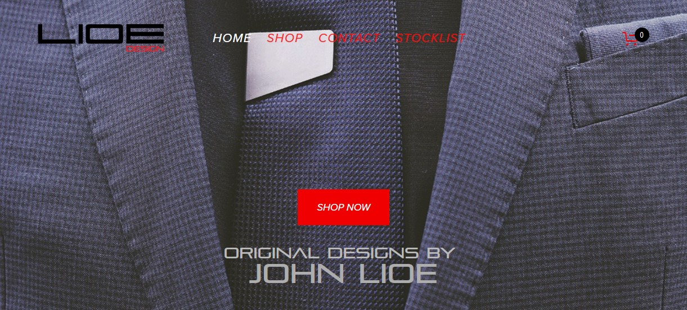

Impressions: Lioe Design
I'm posting a usability analysis of Lioe Design's Website at https://www.lioedesign.com/. The website is designed to be a gallery of items, mostly men's lifestyle accessories. With this in mind, I chose to analyze using the following criteria from my reading of "Don’t Make Me Think!" by Steve Krug, and information gathered from usability.gov's website:
Usability Analysis
 All the user sees before the first scroll.Simplicity of Interface: While the entire website shines in general asthetics, the simplicity of the user interface is a great marker. Navigational components include a band of hyperlinks to easily identifyable pages. It works well and minor improvements should include further separation between the site ID and banner navigation, and better color contrast between the main banner and hyperlinks.
Purposeful Page Layout: The purpose of the site is to expose the user to the designer's wares, and the layout does this well. Another purpose is to sell certain elements, so the positioning of a call to action button "shop now", helps tremendously.
Beyond the Pretty Pictures
Informational Components: Hyperlinks are placed outside of the normal scanning area, the better to highlight the products. Information fields are found on the other side of "contact us" and "about us" hyperlinks. Forcing the user to scroll past the product seems to work, for the shopping and viewing portion of the website purpose. I am ambivalent about suggesting any improvement opportunity here.
Input Controls: Once you reach the point of sale, information and sales information is gathered in clearly marked fields, with text color contrasted for accessibility. This works well, for such a small business website.